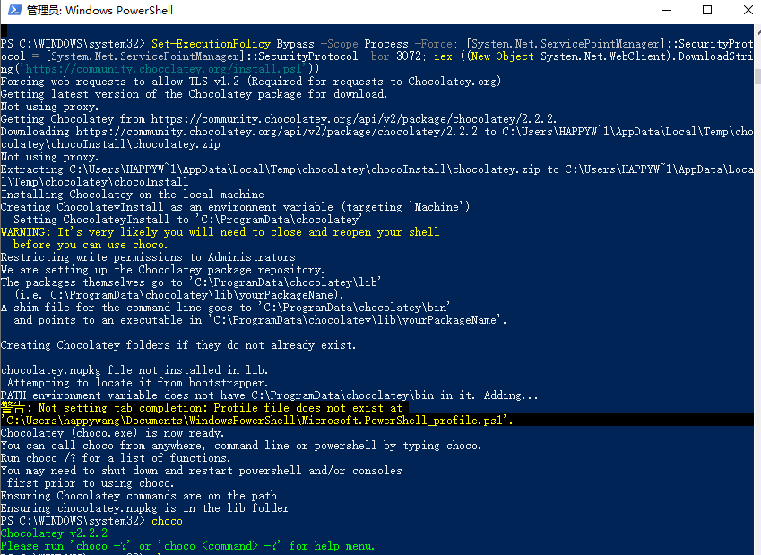

New Post
Windows中使用hugo和Github Pages搭建个人博客（一）
1. 下载并安装hugo
方式一（建议）：包管理器安装
使用Windows中的包管理器直接进行安装，其中可选的包管理器包括Chocolatey, Scoop, Winget三种，每种包管理器具体的安装命令如下。
使用Chocolatey安装
choco install hugo-extended
如何安装Chocolatey?
- 以管理员身份打开Powershell
- 运行如下命令
Set-ExecutionPolicy Bypass -Scope Process -Force; [System.Net.ServicePointManager]::SecurityProtocol = [System.Net.ServicePointManager]::SecurityProtocol -bor 3072; iex ((New-Object System.Net.WebClient).DownloadString('https://community.chocolatey.org/install.ps1'))
如何安装Chocolatey?
- 以管理员身份打开Powershell
- 运行如下命令
Set-ExecutionPolicy Bypass -Scope Process -Force; [System.Net.ServicePointManager]::SecurityProtocol = [System.Net.ServicePointManager]::SecurityProtocol -bor 3072; iex ((New-Object System.Net.WebClient).DownloadString('https://community.chocolatey.org/install.ps1'))